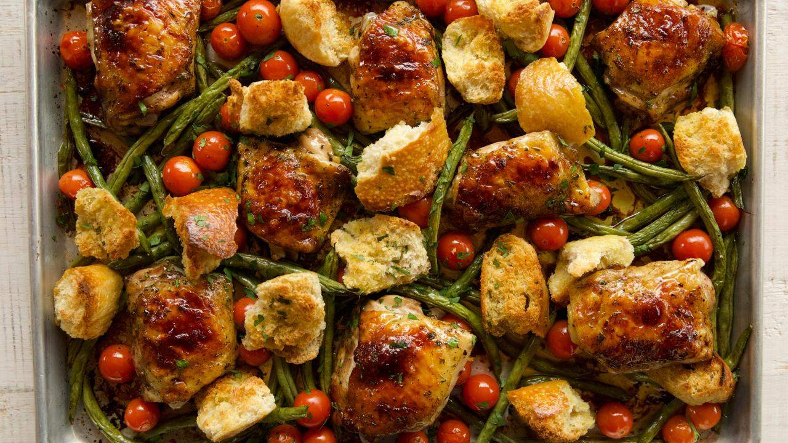

Italian Chicken Sheet Pan Dinner

Description
Ree Drummond's easy and delicious Italian Chicken perfect for an easy night with an amazing meal that doesn't look easy.
Ingredients:
- 1/4 cup balsamic vinegar
- 1 tsp. dried parsley flakes
- 1 tsp. dried basil
- 1 tsp. kosher salt
- 1/2 tsp. freshly cracked black pepper
- 5 cloves garlic minced
- 1 cup plus 3 tbsp. olive oil
- 8 bone-in, skin-on chicken thighs
- 1 lb green beans
- 2 cups miced cherry tomatoes
- 1 loaf crusty ciabatta bread
- 2 tbsp. minced fresh parsley
Directions
- Preheat the oven to 425°F
- To a bowl or pitcher, add the vinegar, parsley, basil, salt, pepper, garlic and 1 cup of the olive oil. WHisk until well combined.
- Put the chicken in a large zipper bag and pour in half the dressing. Seal the bag and squish to coat the chicken.
- Trim the ends of the green beans and put in a large bowl with the tomatoes. Pour over the remaining dressing and toss.
- Using tongs, arrange the chicken skin-side up on a sheet pan. Use a slotted spoon to transfer the beans and tomatoes to the sheet pan, leaving the excess marinade behind. Roast for 20 minutes.
- Meanwhile, rip the bread into large chunks. Add to a bowl, drizzle with the remaining 3 tablespoons olive oil and toss.
- After the chicken and vegetables have roasted for 20 minutes, shake the pan to prevent sticking, then add the bread chunks to the pan. Continue to roast until the chicken is cooked through and the skin is golden and crisp, about another 10 minutes. Sprinkle the sheet an with parsely and serve.